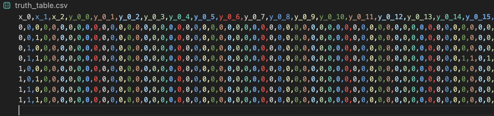

Logic Design
Introduction
在數位邏輯與生成藝術的實驗中，我們常探討如何利用極簡的輸入（Low-dimensional input）來驅動複雜的視覺呈現（High-dimensional output）。本計畫設計了一個基於 3-bit 計數器的系統，用以生成 8幀連續的 32x32 像素圖像，模擬從基礎狀態轉換到高解析度像素矩陣的映射過程。
輸入／輸出定義
輸入：3-bit 計數器
輸出：32x32 像素圖像
真值表
布林方程式

在數位邏輯與生成藝術的實驗中，我們常探討如何利用極簡的輸入（Low-dimensional input）來驅動複雜的視覺呈現（High-dimensional output）。本計畫設計了一個基於 3-bit 計數器的系統，用以生成 8幀連續的 32x32 像素圖像，模擬從基礎狀態轉換到高解析度像素矩陣的映射過程。
輸入：3-bit 計數器
輸出：32x32 像素圖像